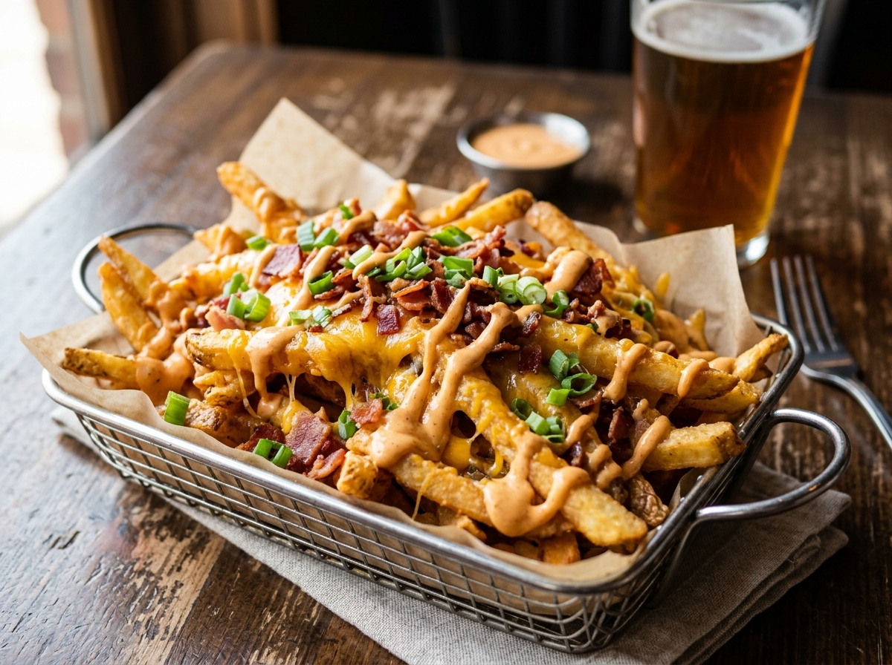

1. House Simmered Cajun Garlic Butter
Real sweet cream butter simmered with fresh minced garlic, roasted paprika, old bay, & lemon zest.
Fresh seafood deserves bold seasoning. We drench broiled lobster tails & jumbo shrimp in house simmered Cajun garlic butter, and fry cornmeal catfish to crisp golden perfection.

Real sweet cream butter simmered with fresh minced garlic, roasted paprika, old bay, & lemon zest.
Catfish fillets & shrimp lightly coated in seasoned yellow cornmeal for maximum crispiness without heavy grease.
Every platter is cooked to order so your lobster tail arrives piping hot & juicy every time.